Lombok是一款Java开发插件，使得Java开发者可以通过其定义的一些注解来消除业务工程中冗长和繁琐的代码，尤其对于简单的Java模型对象（POJO）。在开发环境中使用Lombok插件后，Java开发人员可以节省出重复构建，诸如hashCode和equals这样的方法以及各种业务对象模型的accessor和ToString等方法的大量时间。对于这些方法，它能够在编译源代码期间自动帮我们生成这些方法，并没有如反射那样降低程序的性能。
官网的介绍：Project Lombok is a java library that automatically plugs into your editor and build tools, spicing up your java. Never write another getter or equals method again. Early access to future java features such as val, and much more.
Bean 的对比
传统的 POJO 类是这样的
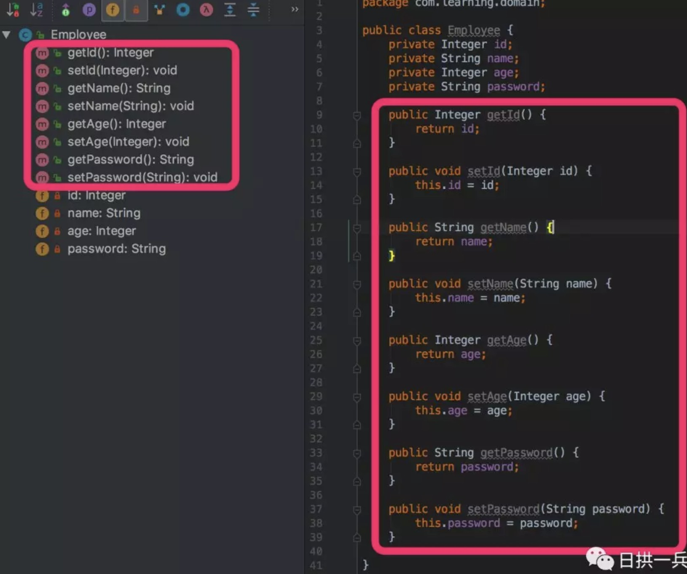
通过Lombok改造后的 POJO 类是这样的
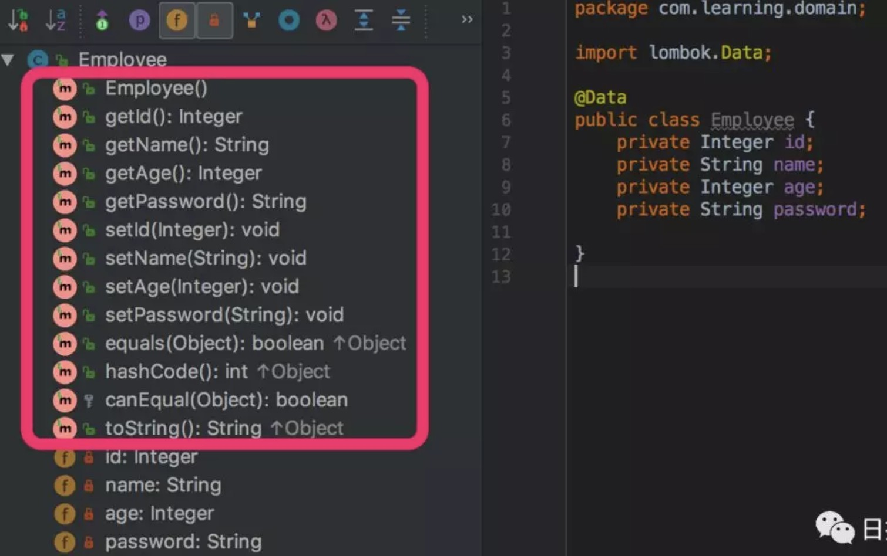
Lombok的安装
引入相应的maven包
|
|
Lombok的scope=provided，说明它只在编译阶段生效，不需要打入包中。事实正是如此，Lombok在编译期将带Lombok注解的Java文件正确编译为完整的Class文件。
添加IDE工具对Lombok的支持
普通的包在引用之后一般的 IDE 都能够自动识别语法，但是 Lombok 的这些注解，一般的 IDE 都无法自动识别，因此如果要使用 Lombok 的话还需要配合安装相应的插件来支持 IDE 的编译，防止IDE 的自动检查报错，下面以 IntelliJ IDEA 举例安装插件。
IDEA中引入Lombok支持如下：
点击File– Settings设置界面，安装Lombok插件
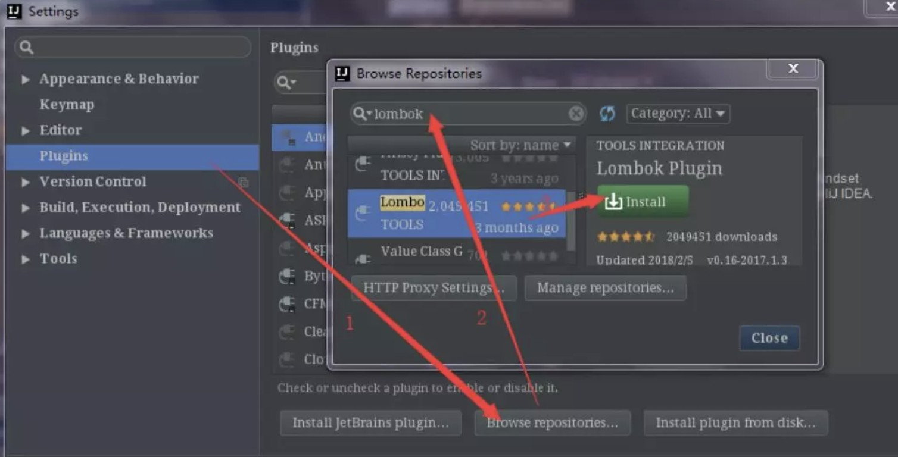
点击File– Settings设置界面，开启 AnnocationProcessors：
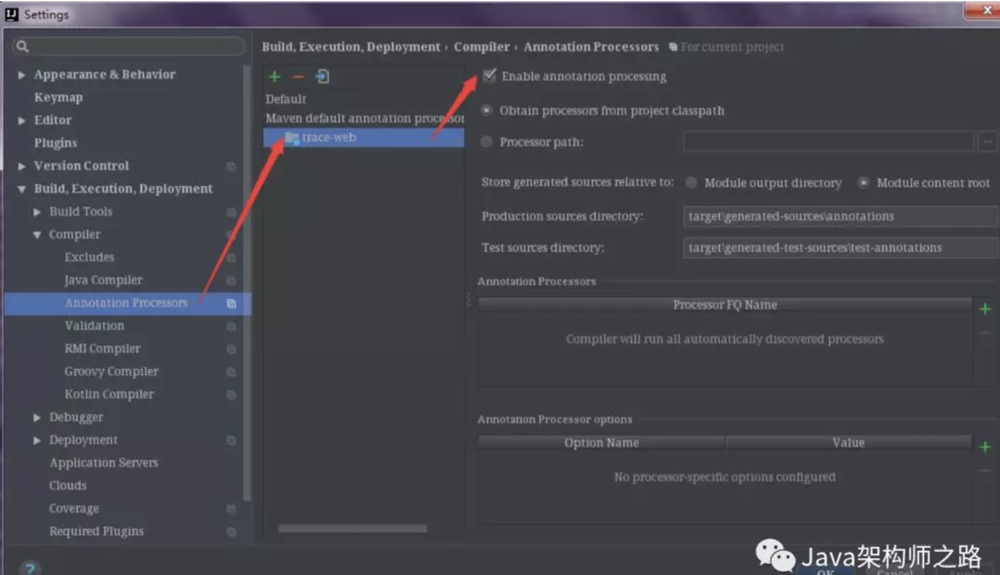
开启该项是为了让Lombok注解在编译阶段起到作用
Lombok实现原理
自从Java 6起，javac就支持“JSR 269 Pluggable Annotation Processing API”规范，只要程序实现了该API，就能在javac运行的时候得到调用。
Lombok就是一个实现了”JSR 269 API”的程序。在使用javac的过程中，它产生作用的具体流程如下：
- javac对源代码进行分析，生成一棵抽象语法树(AST)
- javac编译过程中调用实现了JSR 269的Lombok程序
- 此时Lombok就对第一步骤得到的AST进行处理，找到Lombok注解所在类对应的语法树(AST)，然后修改该语法树(AST)，增加Lombok注解定义的相应树节点
- javac使用修改后的抽象语法树(AST)生成字节码文件
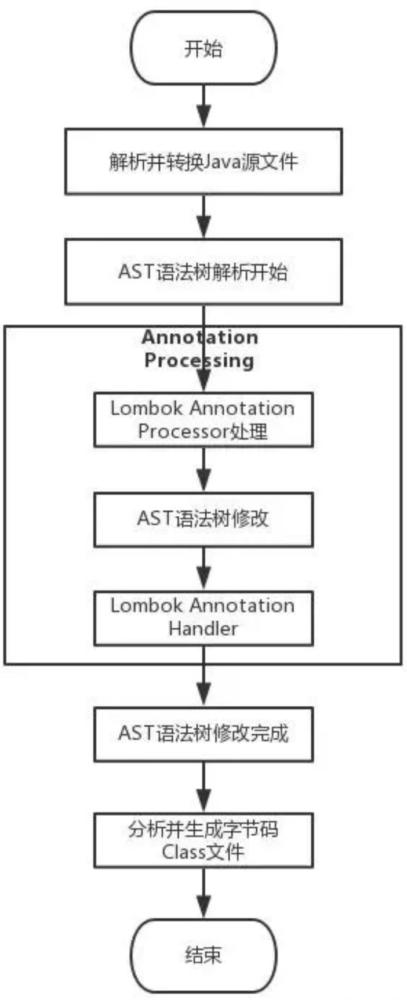
查看下图，@Data的实现，我们发现这个注解是应用在编译阶段的
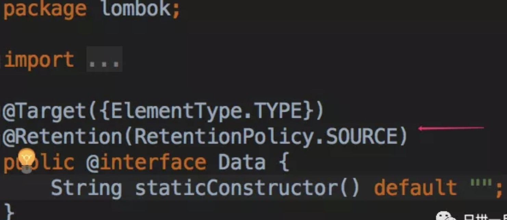
这和我们大多数使用的注解，如 Spring 的注解（在运行时，通过反射来实现业务逻辑）是有很大差别的，如Spring 的@RestController 注解
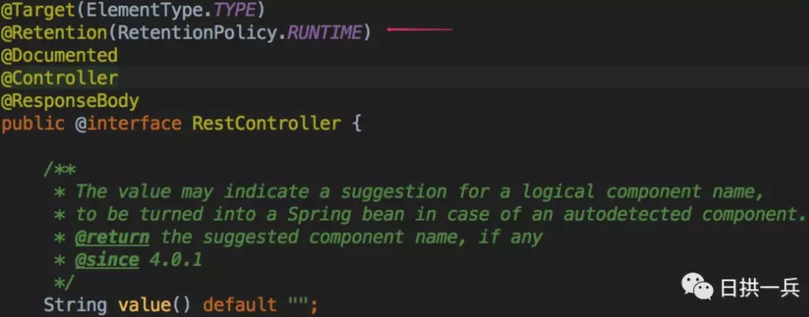
Lombok注解的使用
POJO类常用注解
@Getter/@Setter
- 作用类上，生成所有成员变量的getter/setter方法；
- 作用于成员变量上，生成该成员变量的getter/setter方法。可以设定访问权限及是否懒加载等。
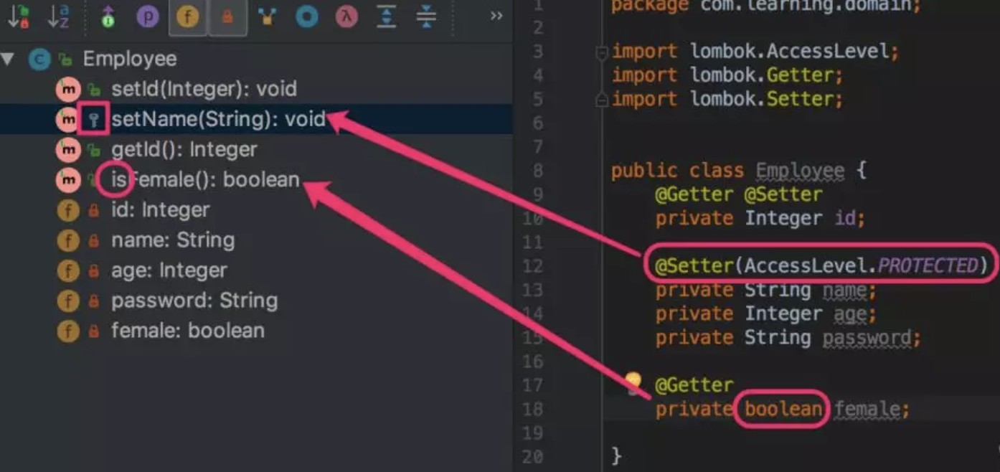
成员变量name指定生成set方法，并且访问权限为protected； 当把该注解应用在类上，默认为所有非静态成员变量生成 get 和 set 方法，也可以通过 AccessLevel.NONE 手动禁止生成get或set方法，如下图
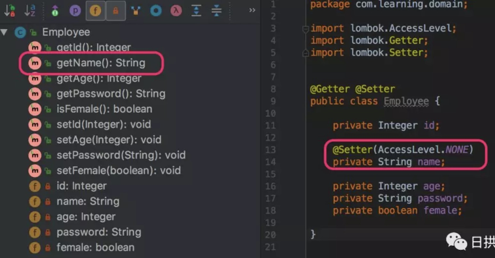
@Accessors
作用于类, 使 bean 支持链式风格
这个注解要搭配@Getter与@Setter使用，用来修改默认的setter与getter方法的形式
@Accessors有三个参数可以使用
- chain 链式的形式
- fluent 流式的形式
- prefix 生成指定前缀的属性的getter与setter方法，并且生成的getter与setter方法时会去除前缀
|
|
测试代码：
这样就完成了一个对于 bean 来讲很友好的链式操作
测试代码：
@Accessors(prefix = “f”) 意义不大, 略
@ToString
作用于类，覆盖默认的toString()方法，可以通过of属性限定显示某些字段，通过exclude属性排除某些字段
编译后:
有些关键的属性，可以控制toString的输出，我们可以了解一下：
@EqualsAndHashCode
作用于类，使用该注解，lombok会为我们生成 equals(Object other) 和 hashcode() 方法，包括所有非静态属性和非transient的属性，同样该注解也可以通过 exclude 属性排除某些字段，of 属性指定某些字段，也可以通过 callSuper 属性在重写的方法中使用父类的字段，这样我们可以更灵活的定义bean的比对，如下图：
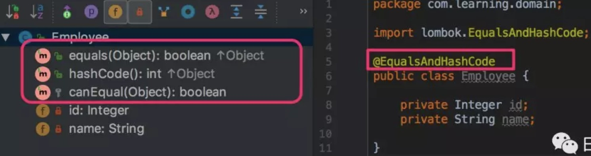
查看编译后的Employee.class文件，如下图：
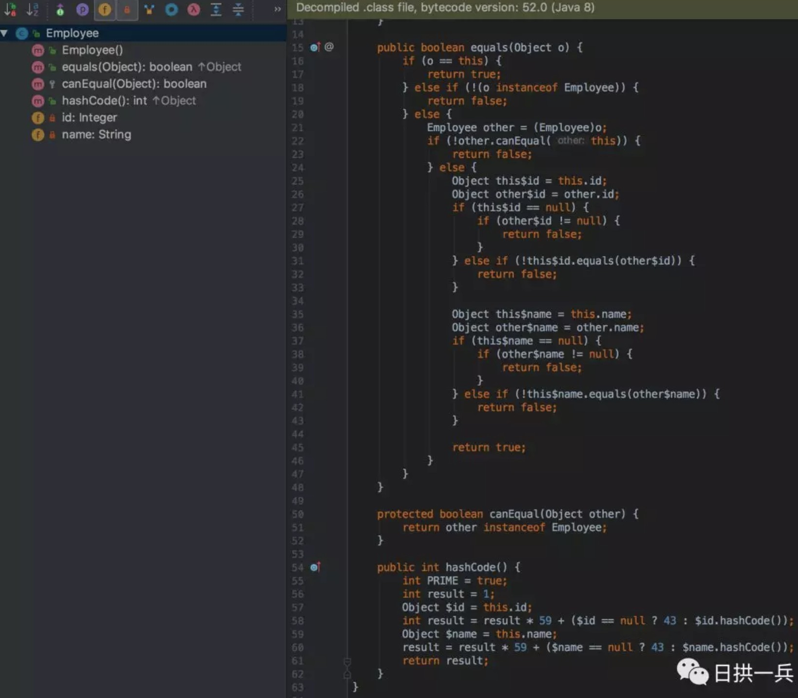
@NonNull
该注解需应用在方法或构造器的参数上或属性上，用来判断参数的合法性，默认抛出 NullPointerException 异常
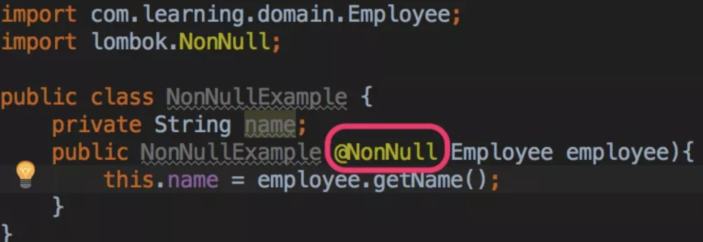
查看NonNullExample.class文件，会为我们抛出空指针异常，如下图：
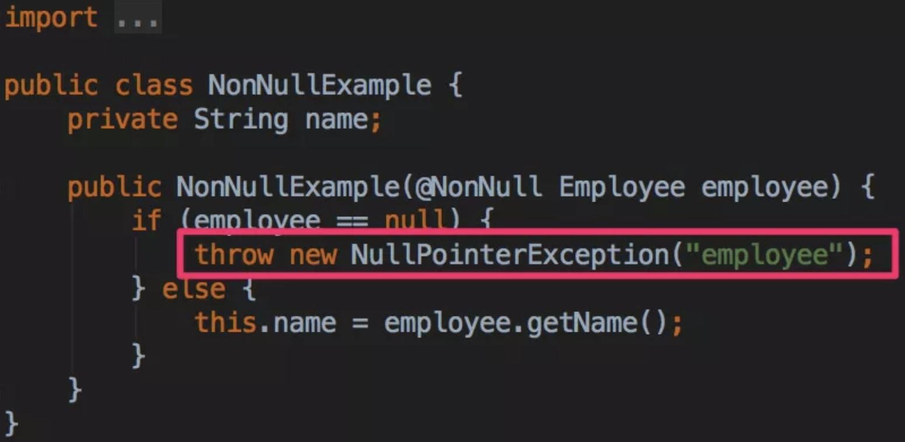
当然我们可以通过指定异常类型抛出其他异常，lombok.nonNull.exceptionType = [NullPointerException | IllegalArgumentException] , 为实现此功能我们需要在项目的根目录新建lombok.config文件：
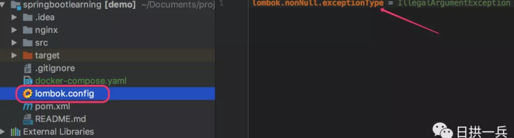
重新编译NonNullExample类，已经为我们抛出非法参数异常：
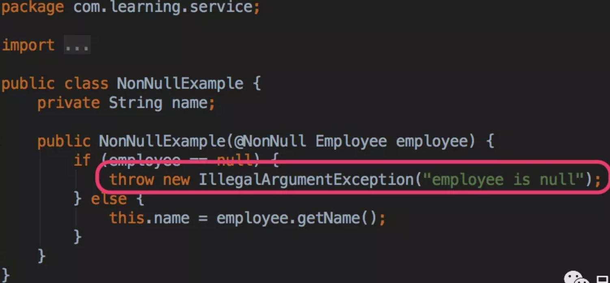
@NoArgsConstructor, @RequiredArgsConstructor, @AllArgsConstructor
作用于类上，用于生成构造函数。有staticName、access等属性。
staticName属性一旦设定，将采用静态方法的方式生成实例，access属性可以限定访问权限。
@NoArgsConstructor
生成无参构造器；
@RequiredArgsConstructor
生成包含final和@NonNull注解的成员变量的构造器；
编译后：
解释：该注解会识别@nonNull字段，然后以该字段为元素产生一个构造函数。备注：如果所有字段都没有@nonNull注解，那效果同NoArgsConstructor
@AllArgsConstructor
编译后的两个class文件如下：
可见, 此注解并不会把父类的属性id拿到Demo的构造器里面去，这是需要注意的地方。并且它也没有默认的构造器了
|
|
生成如下：
看出来的效果为：可以指定生成的构造器的访问权限。但是，如果指定了一个静态方法，那么构造器会自动会被private，只通过静态方法对外提供访问，并且我们发现final的属性值，是不会放进构造函数里面的。
再回过头来看刚刚的 Student，很多时候，我们去写 Student 这个 bean 的时候，他会有一些必输字段，比如 Student 中的 name 字段，一般处理的方式是将 name 字段包装成一个构造方法，只有传入 name 这样的构造方法，才能创建一个 Student 对象。
接上上边的静态构造方法和必传参数的构造方法，使用 lombok 将更改成如下写法（@RequiredArgsConstructor 和 @NonNull）:
测试代码：
这样构建出的 bean 语义是否要比直接 new 一个含参的构造方法(包含 name 的构造方法)要好很多。
当然他仍然是支持链式调用的：
@AllArgsConstructor
生成全参构造器。
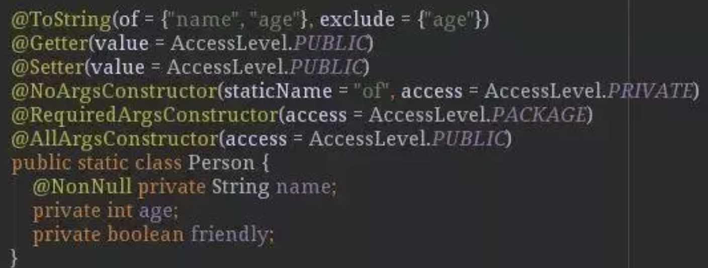
编译后结果：
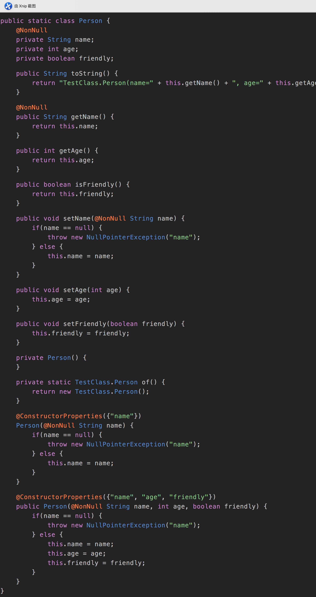
@Data
作用于类上，是以下注解的集合：
- @ToString
- @EqualsAndHashCode
- @Getter
- @Setter
- @RequiredArgsConstructor
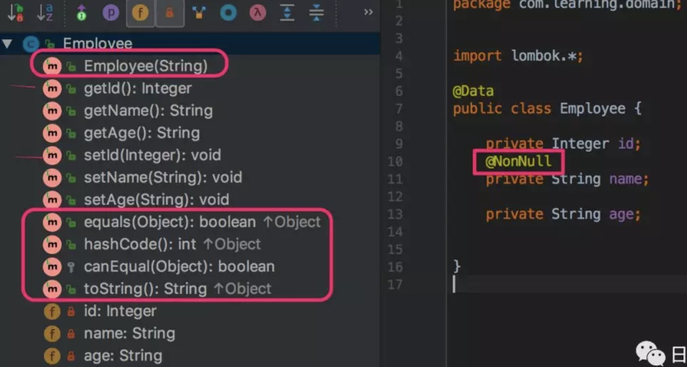
@Builder
作用于类上，将类转变为建造者模式
看一下 Student 这个类的原始 builder 状态:
调用方式：
这样的 builder 代码，让我是在恶心难受，于是我打算用 lombok 重构这段代码：
编译后:
调用方式：
注意: 上面没有加 @Getter 和 @Setter, 编译后就没有相应的 accessor, 故读取不到相应值, 故在使用 @Builder 时, 建议加上 @Getter 和 @Setter
@Log
作用于类上，生成日志变量。针对不同的日志实现产品，有不同的注解：
这个注解还是非常有用的，特别是Slf4j这个，在平时开发中挺有用的
编译后：
其他重要注解
@Cleanup
自动关闭资源，针对实现了java.io.Closeable接口的对象有效，默认是调用资源的close()方法。如果该资源有其它关闭方法，可使用@Cleanup(“methodName”)来指定要调用的方法，就用输入输出流来举个例子吧
编译后：
其实在 JDK1.7 之后就有了 try-with-resource，不用我们显式的关闭流, 也可使用之。
@SneakyThrows
这个注解用在方法上，可以将方法中的代码用try-catch语句包裹起来，捕获异常并在catch中用Lombok.sneakyThrow(e)把异常抛出，可以使用@SneakyThrows(Exception.class)的形式指定抛出哪种异常
编译后：
这里有必要贴出来Lombok.sneakyThrow的代码：
@Synchronized
作用于方法级别，可以替换synchronize关键字或lock锁，用处不大。